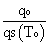
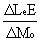
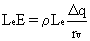
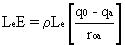
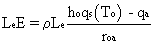
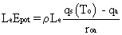
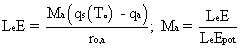

John A. Dutton e-Education Institute
SimSphere Workbook: Chapter 3
Introduction
So far, the simulations have been run with the same initial soil water content. We are about to explore what happens when we change this very important parameter. First, however, let us start with some elementary definitions of what we mean by soil water content. A familiar term, which is extensively used in the literature, particularly with regard to climate simulations, is the 'soil moisture availability'. We define this term in two seemingly independent ways; (1) in the soil as the fraction of 'field capacity', and assign it the symbol M. The subscript s refers to a surface layer of some depth measured from the surface (e.g., 10 cm), and the subscript o to a skin surface layer. Others may define moisture availability differently, for example as the fraction of 'extractable' soil water content, where some residual amount of soil water (e.g. 0.05 by volume) is considered to be un-extractable or as the fraction of saturation. We also define this term with regard to the evaporation flux. We will return to the difference between these two definitions and to a further discussion of the distinction between field capacity and saturation.
An alternate term used to represent soil moisture is the volumetric soil water content, w, which is the volume of soil water content per unit volume of soil. Sometimes the volumetric water content is expressed as a water depth (e.g., 10 cm) but that depth only has meaning when the depth of the column is also understood, e.g., 100 cm; Thus, for a unit surface area, the volumetric soil water content is equal to the equivalent depth of water, e.g. ten centimeters of water in a column of 1 meter corresponds to a volumetric fraction of 0.10. Think of this as a cylindrical tube one-tenth filled with water. You may also see the term 'gravimetric soil water content' reported in the literature; this is the mass of water per unit mass of dry soil. The volumetric and gravimetric definitions are equivalent except that the latter is multiplied equal to the former multiplied by the soil density. Various other measures of soil water content exist, such as the soil water tension, soil matric potential and the potential head, all of which have the units of pressure (Pa or bars) or length. For further details on soil water content units, we refer you to D. Hillel's excellent book, Introduction to Soil Physics, pp. 8-12.
Another parameter that is related to the soil water content is the hydraulic pressure, otherwise called the soil tension or water potential. Hydraulic pressure is a difficult concept which is more relevant to a later part of this course; for the present, simply regard this parameter, which is customarily assigned the symbol ψ, as a measure of the soil water content.
Let us first see how soil water content is used in the model. A related expression to w is the atmospheric moisture availability, Ma. To explain what we mean by this term, we present Eqn. 3.1, which is simply a variation of the resistance law, as expressed in Eqn. 2.2, but for latent heat flux. Here, the potential drop is the specific humidity (q), the vertical difference Δq across an atmospheric layer in the vertical governed by an atmospheric resistance, which is the same as rHreferred to in Eqn. 2.2. (Instead of specific humidity, we could alternately use mixing ratio r or water vapor pressure carbon dioxide concentration, depending on what flux we are talking about).
For a flux within the atmospheric surface layer, the layer of 'constant flux', we can write the specific humidity difference as that between the surface and the top of the surface layer (or any other pair of levels in that surface layer), so long as the resistance in the formula pertains to that same vertical interval, e.g. the resistance of the atmosphere to the vertical transport of sensible or latent heat from point a to point b would be ra,b. Now, it's no trick to measure the specific humidity at the top of the surface layer, or indeed, at any level above the ground surface. The problem, however, is to specify (let alone measure) the specific humidity at the bottom of our imaginary vertical column, i.e. at the ground surface, which is hypothetically in the air directly touching the surface. We could, of course, try to calculate the flux of water vapor by specifying specific humidity q at two ends of an elevated vertical column, i.e. at two levels above the ground, but there are computational problems in doing so, such as having to measure the humidity at the two levels.
Before, proceeding, let us define the atmospheric surface layer. Theoreticians like to define the surface layer as a layer of constant flux, that is the vertical flux is the same at the bottom of the layer as at the top. Now, this is obviously a contradiction in terms, as the warming or cooling of the atmosphere (or the drying or moistening of it) is dependent on there being a difference in sensible heat flux vertically between the top and bottom of the column. But if we take that column to be short enough the vertical difference in flux values will be small. What is small? Normally in science one considers a quantity to be small if it is an order of magnitude (factor of 10) smaller than the numbers to which that small value is being compared. Thus the surface layer is defined as the layer over which the fluxes do not change in the vertical by more than 10%. Nominally, we take this surface layer to have a depth of 50 m, although in reality that depth will vary with time and likely be smaller at night than during the day. For computational purposes we will henceforth take the surface layer depth as 50 m.
In considering moisture availability let us first tie the flux of moisture in the air just above the surface to the amount of substrate water and the specific humidity at the ground surface which is at the level in the atmosphere most closely tied to the soil water content. Second, to make the calculation of vapor flux we need to calculate or specify a vertical difference in specific humidity in the surface layer. We could chose one level slightly above the surface and one at the surface, but we would be faced with the problem that the bottom layer of the column is indeterminate in that we are unsure exactly where the surface lies, and there is no equivalent surface specific humidity corresponding to the surface radiant temperature, which can be more easily measured than specific humidity at the surface. If we choose to measure the specific humidity at the bottom of the column but at a level just above the surface, we would still need to relate the specific humidity at that level to a value at the soil surface. Alternately stated, we would have trouble closing the system mathematically.
Having chosen qa , the specific humidity at the top of the surface layer, we are still faced with the problem of determining an imaginary value of q0 (specific humidity at the earth's surface) for the 'bottom' of the layer (Eqn. 3.2). To do this, we resort to an artifact, which is as follows: Let us define a 'saturation' specific humidity qS at the surface temperature (T0); the fractional relative humidity at the surface h0 is thus approximately1 equal to  allowing us to rewrite Eqn. 3.2 as Eqn. 3.3. This type of formulation, although used by some modelers, still leaves us with a highly variable and difficult to prescribe unknown parameter, that of h0, which is still dependent on q0.
We must admit that the problem of linking q0 or h0 to the substrate water content has not yet been rigorously solved, although some expedients for circumventing the whole issue exist. No matter, let us proceed by defining a 'potential evaporation' LEEnot. There are various ways to define this quantity. Ours is, simply, the evaporation occurring over a saturated surface of temperature T0, using Eqn. 3.2, for 100% relative humidity at the surface h0 = 1.0. This is Eqn. 3.4. (Other definitions of potential evaporation are possible). We now define the quantity, Ma, the 'atmospheric moisture availability', which is simply the ratio of actual evaporation to potential evaporation. Thus we can write Eqn. 3.1 as Eqn. 3.5.
Intuitively, Ma should be related to soil water content. The leap of faith which we require in order to proceed is to set Ma equal to M0 , where M0 is the soil water content as a fraction of field capacity in the soil surface layer. Because there is very little else one can do, this equivalence between Ma and M0 has been adopted by many modelers, although some attempt to demonstrate erudition by using a power law rather than a simple ratio for soil water content. There is some justification for such an assumption based on field measurements, but the exact form of the relationship between Ma and M0 undoubtedly varies with soil type, amongst other things. Nevertheless, the evaporation will vary from zero for Ma = 0 (perfectly dry soil) to potential evaporation for perfectly wet soil. All that can be said for these two somewhat related variables is that both vary between 0 and 1.0, probably in some non-linear fashion with each other. When the soil is absolutely dry both variables will have the value of zero. When at field capacity, both Ma and M0 will equal 1.0. Simply equating one to the other, as we do in the model, may not be exactly correct, but the differences can never be great, as both are constrained to vary in more or less the same way in between the same limits. So let us proclaim the equivalence to be close enough for modeling work.
Eqn. 3.5 ties evaporation closely to soil water content. By setting Ma = 0 (totally dry soil) the evaporation is completely suppressed. For Ma not equal to zero, however, a decrease in Ma, while certainly causing a decrease in evaporation, also corresponds to an increase in sensible heat flux and, therefore, according to Eqn. 2.1, to a rise in surface temperature. However, a rise in surface temperature corresponds to an increase in the saturation specific humidity at the surface qS(T0) and so to an increase in the vertical gradient in q and therefore in potential evaporation. Thus, a compensation (negative feedback) exists which attempts to brake the decrease in evaporation caused by the decrease in soil water content. The result is that a 10% decrease in Ma may correspond in some instances to far less than a 10% decrease in evaporation and in other instances to a greater than 10% decrease. Clearly, since a 100% change in Ma causes a 100% change in evaporation, there must be ranges of Ma in which evaporation changes less rapidly with changing Ma, and ranges where evaporation changes more rapidly than an equivalent change in Ma; n'est-ce pas ?
Before proceeding to the simulations, we should more precisely define field capacity and soil saturation. Here is an experiment for you. Take a flower pot, fill it with water until it starts to drip (but be careful here). When the dripping ceases we can say that the water content in the soil is in equilibrium with gravity and is at field capacity. If we were to add water beyond field capacity until all the pores between the soil grains were filled with water the soil would then be at saturation. At this point the soil would really look like mud. A measure of saturation for a given soil sample is its porosity which is the percent of the soil occupied by spaces between grains. A rule of thumb is that field capacity tends to be about 0.75 of saturation, although both field capacity and saturation vary with soil type to the extent that the ratio between them is not really a constant three-quarters. Typically, a soil may have a saturation value of about 0.44 by volume and a field capacity of 0.33 by volume.
Field capacity and other soil parameters are set in the model by the choice of soil type. We will not be concerned with soil properties except for vegetated surfaces, as the bare soil evaporation does not make use of soil properties explicitly. This seemingly oversight on our part was done as a convenience.
Most models of surface energy fluxes use field capacity rather than saturation to define moisture availability. There are two reasons for this choice. One is that saturation in natural soils is fleeting after a rainstorm. Very quickly the excess water beyond field capacity diffuses downward, or runs off or flows directly to deeper layers via cracks in the substrate, thereby reducing the soil water content to field capacity. The main reason, however, is that the fluxes from saturated soil are virtually identical to that over soil at field capacity, and therefore there is virtually no sensitivity of the surface fluxes to soil water content above field capacity. In some models the value of zero soil moisture availability is taken at a low value, loosely identified with the so-called 'wilting point'. We do not adopt this as the lower limit (preferring instead that zero be the lower limit for soil water content) because we believe that evaporation can continue even when the soil is below wilting point. Wilting is really defined only for plants in any case.
Simulations
Level 1In this scenario we give you carte blanch to fiddle with the surface moisture availability as you so desire, however you might like to ponder the following in making your simulations. Note that we do not expect you to do everything suggested; simply take a facet and explore it as you develop your understanding of the concept of moisture availability!
Simulation series 1
- Vary Surface Moisture Availability
In these series of simulations we would like to see how the fluxes and surface air and surface radiant temperatures fluctuate when soil water content is changed. We are interested in the relative differences between the individual simulations. Two values of moisture availability, one for the soil surface (Mo) and one for the root zone (Mr), are required to make a simulation. Until now both have been set, the former at a value of 0.5 (half of field capacity) and the latter at 0.75.
After making a run with the standard parameters used in chapter 1, reduce Mo to 0.1, and then increase it to 0.9.
Look at the changes in sensible and latent heat fluxes, as well as the surface temperature and surface moisture availability itself.
Explore the sensitivity of evaporation and of surface temperature To to changes in Mo. (We define 'sensitivity' of evaporation to changes in Mo as .)
Questions:
- Based on these two simulations, in what part of that range of Mo is the sensitivity of evaporation and of surface temperature to soil moisture the greatest? Where are those sensitivities the smallest? Are those sensitivities constant throughout the day?
- How does the Bowen Ratio change with changing Mo ? (Recall that the Bowen Ratio is the ratio of sensible to latent heat flux at the surface.)
- How does Mo itself vary throughout the day and why should it vary in time?
- How does ground flux v(the flux from the surface up or down through the layer of soil just below the surface) vary with changing Mo? It should be evident to you by now that the moisture availability profoundly affects the Bowen Ratio and the individual fluxes.
Simulation series 2
- Change the windspeed and moisture availability
Let's see how surface fluxes are affected by a changing Mo at different wind speeds. In other words, we want to see how the sensitivities of the fluxes are determined in the above simulation change with wind speed? In so doing, lets examine the variation of soil water content itself with time during the day.
Vary the windspeed just as you did in Simulation 1 of Chapter 2, but perform the simulations with Mo = 0.1. Repeat these simulations using a Mo = 0.9. To keep things straight, it may help to make a table or chart listing the varying parameters of these runs and the features seen in the output.
Questions:
- You may also have noted from the previous scenario that windspeed affects the Bowen ratio. What we would like to investigate is whether that change in Bowen ratio due to changing windspeed is likely to be in the same sense for all values of Mo. Alternately stated, does a change in surface energy fluxes brought about by an change in windspeed equally affect sensible and latent heat fluxes at all values of Mo?
- We know that decreasing the wind speed causes the atmospheric resistance to go up and the fluxes to go down. (You can see this effect in reverse by blowing on wet skin or on hot skin caused by a burn.) Does this occur in the atmosphere? Obviously, were the soil absolutely dry, the change in surface latent heat flux due to a change in wind speed would be zero, whereas this would not be the case were the soil wet. The goal here is to assess at which range of soil water content will wind speed play the largest role in determining fluxes.
- What happens with the surface moisture availability versus time during the day?
Simulation series 3
- Change the root zone moisture availability
Root zone moisture availability will be very important when plants are introduced but it will also have a small effect in the case of bare soil.
Change the root zone moisture availability Mr to 0.1 and then increase this parameter to 0.9.
Questions:
- Is there any effect on the fluxes or temperatures? (Recall that we are dealing only with bare soil; there is no vegetation.)
- What happens to Mo during the day? Why does it decrease when the root zone soil water content is low? Would it decrease if the two moisture availability values (root zone and surface) were set equal initially?
- Why does the surface soil water content decrease some times even when the root zone soil water content is high? What happens to Mo at night? Can you explain why the latter tends to increase at night especially when the root zone soil water content is high?
The above are all questions you should be able to answer without much knowledge of soil physics. The key here is that two factors affect the soil water content in our simple two-layer soil scheme, evaporation and diffusion of soil water vertically within the substrate. Water is lost from the surface layer during evaporation (but not directly from the root zone soil water content) but it can also flow down the gradient of soil water content, even at night, within the soil. Later we will see that transpiration, the evaporation from leaves, is taken by the roots from water in the root zone layer.
Finally, a suggestion. Don't perform more simulations than you are able to comprehend at this moment. If the results seem bewildering, stop and think about them. Don't worry about covering all bases.
Level 2
As shown in these simulations, soil water content is a very crucial parameter in simulating surface energy fluxes and temperatures. However, it is very difficult to obtain an accurate estimation of soil moisture either physically or empirically to insert into a model. On the other hand, it is relatively easy to specify parameters such as season, latitude, slope, azimuth, and wind speed in these models, as they can be measured accurately.
Qualitatively, compare the effects of varying soil water content with those of varying latitude, slope, azimuth, windspeed, and time of the year on surface fluxes and temperatures.
Look back at the results from previous simulations in Chapters 1 and 2. Try ranking these variables in order from most important to least important in determining the surface energy balance. Note that the ranking may vary depending on the range you specify. For example, time of year may not matter between May and September, but it could be crucial between September and December.
This should provide you with a good understanding of how the factors we have looked at so far may affect future simulations, all other things being equal. It is important to understand the uncertainty of various inputs into a model along with their potential influence on the output. In this case, soil water content is a relatively uncertain parameter, yet its potential to influence the simulation is very high.
Design an experiment that illustrates why it is best to water the lawn at dusk or on a cloudy day rather than in the morning. Do this by first making four simulations: By 'best' we mean a more efficient use of water and by efficient we mean that more water gets in the root zone as opposed to being evaporated at the surface. Here are some suggestions:
- Perform a simulation with standard conditions with the surface moisture availability at field capacity (Mo = 1,0) and the root zone moisture availability at a low value, say 0.1, representative of a heavily watered surface with a very thirsty root zone layer. This will simulate the watering case. Start at the standard early morning time and run until 5 AM the following day.
- Perform the simulation with a low value of soil water content at the surface (Mo= 0.1) also starting at the early morning time. This simulates the non-watering case.
- Run a third simulation with a cloudy sky (cloud parameter equal to 0.7) for the watered case.
- Finally, start the simulation at 5 PM and let it run until 5 AM the next morning for the watered case.
Questions:
- In the three simulations, can you assess qualitatively how much of the surface water reaches the root zone and how much is "lost" to evaporation by the end of the day.
- What is the difference in the root zone moisture availability and surface moisture availability at 3 AM in the three cases?
- If the day were cloudy would it matter so much if the lawn were watered in the morning?
- What is the difference in water efficiency (root zone storage versus water lost to evaporation) after 12 hours of simulation for the case when the lawn is watered in the morning versus when it is watered in the evening?
Glossary
List of terms to look up
gravimetric soil water content
mixing ratio
potential evaporation
saturation vapor pressure
sensitivity curve
soil porosity
soil water potential; hydraulic potential; soil tension
soil water saturation
transpiration
vapor pressure
volumetric soil water content
wilting point
References
- Hillel, D., 1982, Introduction to Soil Physics, pp. 8 - 12.
- Wetzel, P. and J.-T. Chang, 1987, Concerning the relationship between evapotranspiration and soil moisture, J. Climate and Appl. Meteor., 26, pp 24 - 25.
- Sellers P. J., Y. Mintz, Y. C. Sud and A. Dalcher, 1986, A simple biosphere model (SiB) for use within general circulation models, J. Atmos. Sci., 43, pp 520-521.
- Dickinson, R., 1984, Modeling evapotranspiration for three- dimensional global climate models, Climate Processes and Climate Sensitivity, Geophysical Monograph 29, Maurice Ewing Volume 5, pp 60-62.
- Mahfouf, J.- F. and B. Jacquemin, 1989, A study of rainfall interception using a land surface parameterization for mesoscale meteorological models, J. Appl. Meteor., 28, p.1284.
Equations
[Eqn 3.1]- 
- 
- 
- 
- 